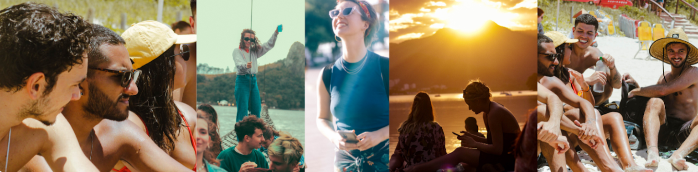

QUEM SOMOS
Somos um projeto independente voluntário pensado a partir de alunos e para ALUNOS visando a interação e integração dos estudantes intercambistas com os alunos locais da PUC-RIO. Em 2017 juntamos nossos primeiros 14 voluntários fundadores. Todos eram recém chegados de intercâmbios e estavam morrendo de saudades do mix de culturas que experienciaram por lá. Temos como objetivos incentivar trocas culturais através de atividades diversas, focadas na construção de relações significativas para uma verdadeira experiência carioca. Visamos destacar a importância das relações inter-culturais na vivência universitária, ser uma rede sem fronteiras, consolidada pelo jovem, para o jovem, da PUC para o mundo.
Desde a nossa criação, buscamos atender as demandas dos intercambistas. Por meio de suas demandas, ao longo dos semestres. Hoje, buscamos atividades diversas, que abrangem aventuras pela natureza, esportes, eventos sociais e culturais, etc.
Desde o início, trabalhamos juntamente com a CCCI, sendo parte integrante da PUC. A CCCI é uma espécie de “Mãe” para os BROTHERS, e nós somos os “irmãos mais velhos” dos nossos irmãos internacionais. Se os intercambistas vierem pedir auxílio para você (como integrante do Brother Carioca) como dicas de site para pesquisar acomodação, assuntos acadêmicos, burocráticos e emergenciais, encaminhe eles para o CCCI (Linda e sua Equipe)!!!! Caso algum intercambista esteja procurando flatmates, sugira nosso grupo do Facebook, onde intercambistas fazem posts relacionados ao tema.